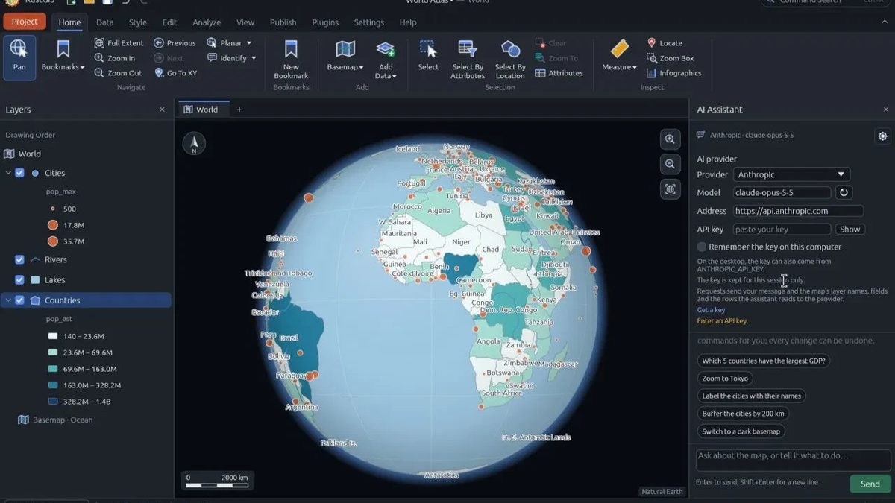

RustGIS 0.2: SQL con DuckDB y mapas hechos por agentes de IA
Un día después de su primera versión, RustGIS sumó más formatos, consultas SQL y un servidor MCP para que asistentes como Claude Code generen mapas. Para quienes automatizamos reportes forestales, es la parte más interesante.

La novedad
RustGIS v0.2.0 amplía los datos que puede abrir, incluso en la versión web; agrega un servidor MCP para que agentes de IA hagan mapas, y reorganiza la cinta de opciones según el orden real del trabajo. Lo nuevo:
- Más formatos: GeoPackage, GeoParquet, FlatGeobuf, KML/KMZ, GPX, Shapefiles comprimidos en ZIP y PMTiles se abren directamente; los archivos grandes se leen por partes según la vista, también en la web.
- Exportación: las capas se guardan como GeoPackage, GeoParquet, Shapefile o KMZ.
- SQL con DuckDB: consultas SQL, bases DuckDB con DuckDB Spatial y lectura de File Geodatabase, DXF y otros formatos mediante GDAL.
- Servidor MCP: agentes como Claude Code, Cursor o VS Code pueden manejar RustGIS y hacer mapas con
rustgis-cli mcp. - Cinta por etapas: Inicio, Datos, Estilo, Edición, Análisis, Vista y Publicar, en 15 idiomas.
- Instalación y actualización: Homebrew, AUR, Fedora COPR y winget, y búsqueda de actualizaciones desde la pestaña Ayuda.
Por qué importa para el bosque
La información forestal oficial suele llegar en File Geodatabase, Shapefile o KMZ, y los cruces que más se repiten (censo contra parcelas de corta, alertas contra concesiones) son, en el fondo, consultas. Poder leer una geodatabase, cruzarla con SQL y exportar a KMZ en la misma herramienta, y además pedírselo a un agente de IA, acerca la automatización a equipos que hoy hacen estos pasos a mano.
Cómo lo aplicaríamos
Limitaciones y cuidados
- Proyecto muy reciente. Dos versiones en dos días indican mucho movimiento; conviene esperar a que se estabilice antes de usarlo en procesos oficiales.
- Revisión humana. Un mapa hecho por un agente de IA debe revisarse siempre: proyección, leyenda, fuentes y cifras.
- Confidencialidad. Si un agente trabaja con datos de expedientes o ubicaciones de especies CITES, asegúrate de que el modelo y las capas no salgan del entorno institucional.